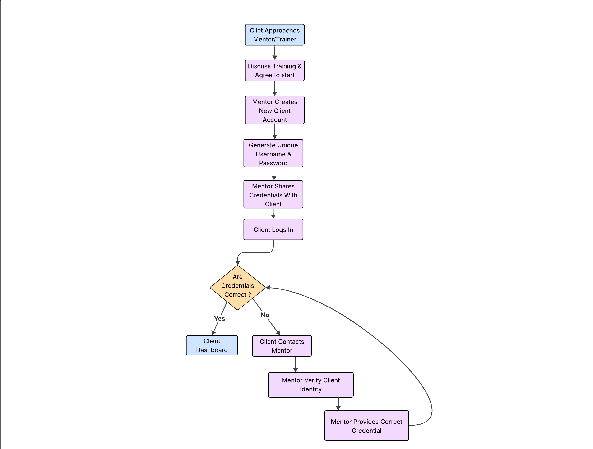

Client Onboarding Process:
Before using the application, the journey typically begins when a client approaches a mentor/trainer through social media, a phone call, or any other communication channel seeking fitness guidance.
Once both agree to start, the mentor creates a new account for the client by generating a unique username and password.
These credentials are shared with the client, who can then log in to the system and access their personalized dashboard.
If the client ever forgets their credentials, the mentor has full authority to verify and provide the login details again.

This setup ensures:
- A controlled onboarding process (mentor-approved accounts only)
- Secure access for each client
- Easy recovery for lost credentials
Trainer Functionalities:
1. Client Management
- Add new client with a username and password.
- View all clients with full info – their profile, assigned workouts,login credentials and past workouts.
- Delete client if they stop mentorship.
2. Create, Assign & Manage Templates
Templates are structured schedules for both workouts and diet plans.
They help trainers maintain consistency, save time, and ensure every client follows a personalized plan suited to their goals.
How it works
When a new client joins without workout or diet knowledge, the trainer usually starts with a beginner-level template.
As the client progresses or introduces new requirements (like muscle gain, fat loss, or injury recovery), the trainer can update or switch them to a different template — ensuring the plan always aligns with their fitness stage.
Functionalities
- Create: Build workout or diet templates based on daily or monthly routines of client.
- Assign: Apply a template to one or multiple clients simultaneously.
- Edit: Modify exercises, meal items, or schedules whenever needed.
- Remove Client: Detach a specific client from a template.
- Delete: Remove unnecessary templates to keep the system clean.
Training Templates:
1. Workout Template
Used for: Strength exercises
- Strength exercises: These involve lifting weights and are used to build muscle.
Includes:
- Exercise name
- Number of Sets
- Suggested weight
- Reps
Example:
| Exercise Name | Sets / Duration | Suggested Weight | Reps Range |
|---|---|---|---|
| Bench Press | 3 sets | 20kg / 25kg / 30kg | 10 / 8 / 6 |
| Squats | 4 sets | 40kg / 45kg / 50kg | 12 / 10 / 8 |
| Shoulder Press | 3 sets | 15kg / 20kg / 25kg | 10 / 10 / 8 |
2. Diet Template
Used for: Planning meals and timings.
Includes:
- Food item
- Quantity
- Time
Example:
| Food Item | Quantity | Time |
|---|---|---|
| Oats | 1 Bowl | 6:00 AM |
| Banana | 1 Piece | 6:00 AM |
| Brown Rice | 1 Plate | 9:00 AM |
| Paneer | 100g | 12:30 PM |
| Salad | 1 Bowl | 12:30 PM |
| Oats | 1 Bowl | 7:00 PM |
| Milk | 1 Glass | 7:00 PM |
3. Report Handling
- Trainers get daily progress reports of the assigned schedule from clients via email.
- Trainers can also receive reports for past workout sessions of the client if the client forgot to send them or wasn't able to send them on time.